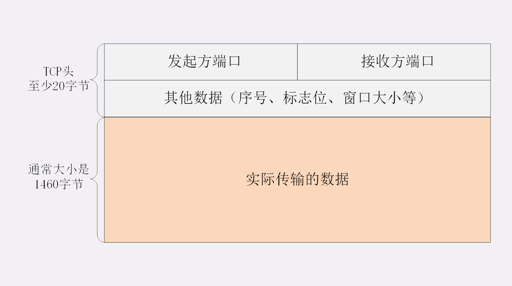
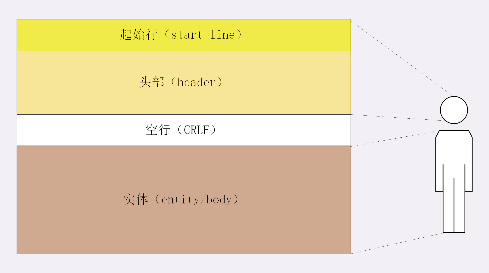
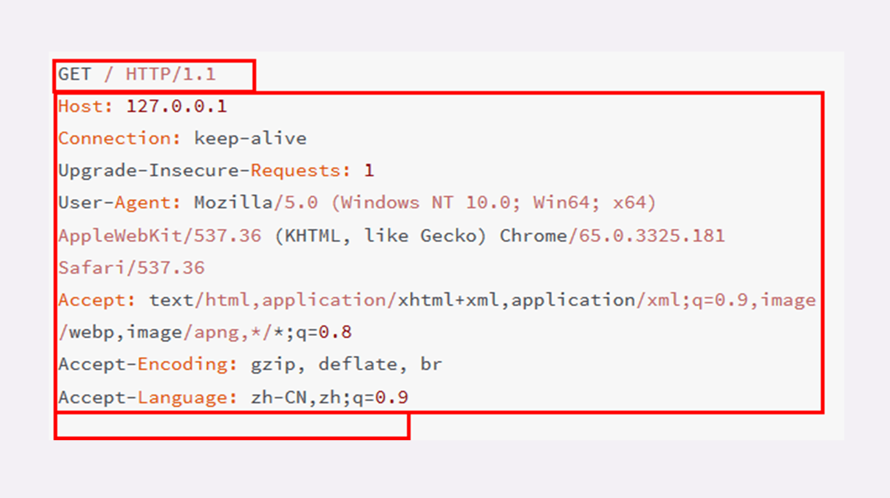
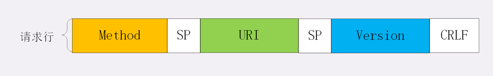
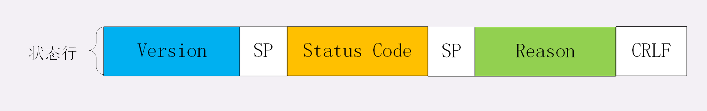
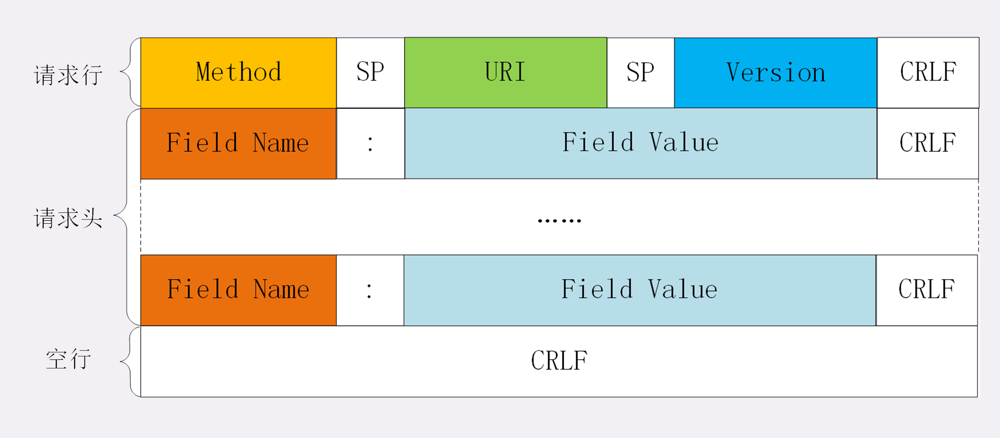
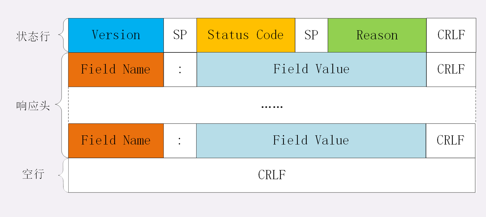
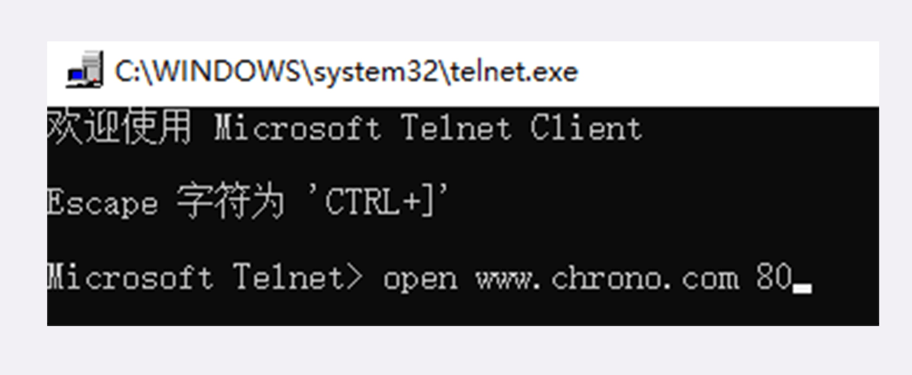
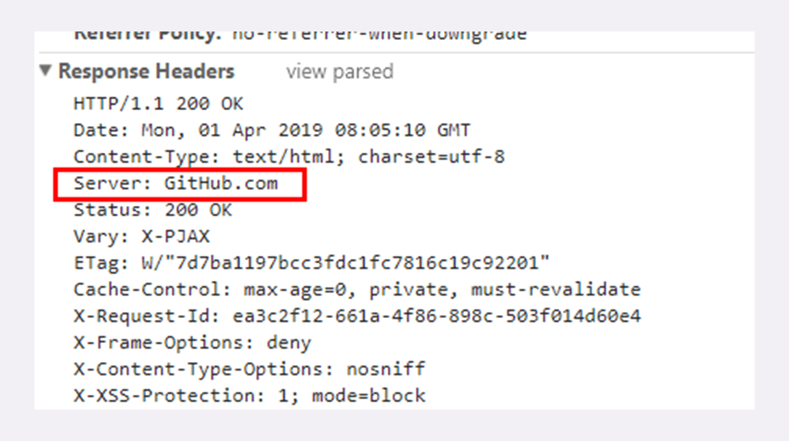
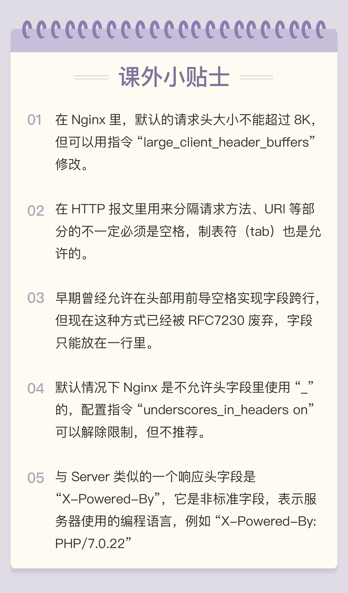

- 00 开篇词｜To Be a HTTP Hero.md.html
- 01 时势与英雄：HTTP的前世今生.md.html
- 02 HTTP是什么？HTTP又不是什么？.md.html
- 03 HTTP世界全览（上）：与HTTP相关的各种概念.md.html
- 04 HTTP世界全览（下）：与HTTP相关的各种协议.md.html
- 05 常说的“四层”和“七层”到底是什么？“五层”“六层”哪去了？.md.html
- 06 域名里有哪些门道？.md.html
- 07 自己动手，搭建HTTP实验环境.md.html
- 08 键入网址再按下回车，后面究竟发生了什么？.md.html
- 09 HTTP报文是什么样子的？.md.html
- 10 应该如何理解请求方法？.md.html
- 11 你能写出正确的网址吗？.md.html
- 12 响应状态码该怎么用？.md.html
- 13 HTTP有哪些特点？.md.html
- 14 HTTP有哪些优点？又有哪些缺点？.md.html
- 15 海纳百川：HTTP的实体数据.md.html
- 16 把大象装进冰箱：HTTP传输大文件的方法.md.html
- 17 排队也要讲效率：HTTP的连接管理.md.html
- 18 四通八达：HTTP的重定向和跳转.md.html
- 19 让我知道你是谁：HTTP的Cookie机制.md.html
- 20 生鲜速递：HTTP的缓存控制.md.html
- 21 良心中间商：HTTP的代理服务.md.html
- 22 冷链周转：HTTP的缓存代理.md.html
- 23 HTTPS是什么？SSLTLS又是什么？.md.html
- 24 固若金汤的根本（上）：对称加密与非对称加密.md.html
- 25 固若金汤的根本（下）：数字签名与证书.md.html
- 26 信任始于握手：TLS1.2连接过程解析.md.html
- 27 更好更快的握手：TLS1.3特性解析.md.html
- 28 连接太慢该怎么办：HTTPS的优化.md.html
- 29 我应该迁移到HTTPS吗？.md.html
- 30 时代之风（上）：HTTP2特性概览.md.html
- 31 时代之风（下）：HTTP2内核剖析.md.html
- 32 未来之路：HTTP3展望.md.html
- 33 我应该迁移到HTTP2吗？.md.html
- 34 Nginx：高性能的Web服务器.md.html
- 35 OpenResty：更灵活的Web服务器.md.html
- 36 WAF：保护我们的网络服务.md.html
- 37 CDN：加速我们的网络服务.md.html
- 38 WebSocket：沙盒里的TCP.md.html
- 39 HTTP性能优化面面观（上）.md.html
- 40 HTTP性能优化面面观（下）.md.html
- 结束语 做兴趣使然的Hero.md.html
09 HTTP报文是什么样子的？
在上一讲里，我们在本机的最小化环境了做了两个 HTTP 协议的实验，使用 Wireshark 抓包，弄清楚了 HTTP 协议基本工作流程，也就是“请求 - 应答”“一发一收”的模式。
可以看到，HTTP 的工作模式是非常简单的，由于 TCP/IP 协议负责底层的具体传输工作，HTTP 协议基本上不用在这方面操心太多。单从这一点上来看，所谓的“超文本传输协议”其实并不怎么管“传输”的事情，有点“名不副实”。
那么 HTTP 协议的核心部分是什么呢？
答案就是它传输的报文内容。
HTTP 协议在规范文档里详细定义了报文的格式，规定了组成部分，解析规则，还有处理策略，所以可以在 TCP/IP 层之上实现更灵活丰富的功能，例如连接控制，缓存管理、数据编码、内容协商等等。
报文结构
你也许对 TCP/UDP 的报文格式有所了解，拿 TCP 报文来举例，它在实际要传输的数据之前附加了一个 20 字节的头部数据，存储 TCP 协议必须的额外信息，例如发送方的端口号、接收方的端口号、包序号、标志位等等。
有了这个附加的 TCP 头，数据包才能够正确传输，到了目的地后把头部去掉，就可以拿到真正的数据。

HTTP 协议也是与 TCP/UDP 类似，同样也需要在实际传输的数据前附加一些头数据，不过与 TCP/UDP 不同的是，它是一个“纯文本”的协议，所以头数据都是 ASCII 码的文本，可以很容易地用肉眼阅读，不用借助程序解析也能够看懂。
HTTP 协议的请求报文和响应报文的结构基本相同，由三大部分组成：
- 起始行（start line）：描述请求或响应的基本信息；
- 头部字段集合（header）：使用 key-value 形式更详细地说明报文；
- 消息正文（entity）：实际传输的数据，它不一定是纯文本，可以是图片、视频等二进制数据。
这其中前两部分起始行和头部字段经常又合称为“请求头”或“响应头”，消息正文又称为“实体”，但与“header”对应，很多时候就直接称为“body”。
HTTP 协议规定报文必须有 header，但可以没有 body，而且在 header 之后必须要有一个“空行”，也就是“CRLF”，十六进制的“0D0A”。
所以，一个完整的 HTTP 报文就像是下图的这个样子，注意在 header 和 body 之间有一个“空行”。

说到这里，我不由得想起了一部老动画片《大头儿子和小头爸爸》，你看，HTTP 的报文结构像不像里面的“大头儿子”？
报文里的 header 就是“大头儿子”的“大头”，空行就是他的“脖子”，而后面的 body 部分就是他的身体了。
看一下我们之前用 Wireshark 抓的包吧。

在这个浏览器发出的请求报文里，第一行“GET / HTTP/1.1”就是请求行，而后面的“Host”“Connection”等等都属于 header，报文的最后是一个空白行结束，没有 body。
在很多时候，特别是浏览器发送 GET 请求的时候都是这样，HTTP 报文经常是只有 header 而没 body，相当于只发了一个超级“大头”过来，你可以想象的出来：每时每刻网络上都会有数不清的“大头儿子”在跑来跑去。
不过这个“大头”也不能太大，虽然 HTTP 协议对 header 的大小没有做限制，但各个 Web 服务器都不允许过大的请求头，因为头部太大可能会占用大量的服务器资源，影响运行效率。
请求行
了解了 HTTP 报文的基本结构后，我们来看看请求报文里的起始行也就是请求行（request line），它简要地描述了客户端想要如何操作服务器端的资源。
请求行由三部分构成：
- 请求方法：是一个动词，如 GET/POST，表示对资源的操作；
- 请求目标：通常是一个 URI，标记了请求方法要操作的资源；
- 版本号：表示报文使用的 HTTP 协议版本。
这三个部分通常使用空格（space）来分隔，最后要用 CRLF 换行表示结束。

还是用 Wireshark 抓包的数据来举例：
GET / HTTP/1.1
在这个请求行里，“GET”是请求方法，“/”是请求目标，“HTTP/1.1”是版本号，把这三部分连起来，意思就是“服务器你好，我想获取网站根目录下的默认文件，我用的协议版本号是 1.1，请不要用 1.0 或者 2.0 回复我。”
别看请求行就一行，貌似很简单，其实这里面的“讲究”是非常多的，尤其是前面的请求方法和请求目标，组合起来变化多端，后面我还会详细介绍。
状态行
看完了请求行，我们再看响应报文里的起始行，在这里它不叫“响应行”，而是叫“状态行”（status line），意思是服务器响应的状态。
比起请求行来说，状态行要简单一些，同样也是由三部分构成：
- 版本号：表示报文使用的 HTTP 协议版本；
- 状态码：一个三位数，用代码的形式表示处理的结果，比如 200 是成功，500 是服务器错误；
- 原因：作为数字状态码补充，是更详细的解释文字，帮助人理解原因。

看一下上一讲里 Wireshark 抓包里的响应报文，状态行是：
HTTP/1.1 200 OK
意思就是：“浏览器你好，我已经处理完了你的请求，这个报文使用的协议版本号是 1.1，状态码是 200，一切 OK。”
而另一个“GET /favicon.ico HTTP/1.1”的响应报文状态行是：
HTTP/1.1 404 Not Found
翻译成人话就是：“抱歉啊浏览器，刚才你的请求收到了，但我没找到你要的资源，错误代码是 404，接下来的事情你就看着办吧。”
头部字段
请求行或状态行再加上头部字段集合就构成了 HTTP 报文里完整的请求头或响应头，我画了两个示意图，你可以看一下。


请求头和响应头的结构是基本一样的，唯一的区别是起始行，所以我把请求头和响应头里的字段放在一起介绍。
头部字段是 key-value 的形式，key 和 value 之间用“:”分隔，最后用 CRLF 换行表示字段结束。比如在“Host: 127.0.0.1”这一行里 key 就是“Host”，value 就是“127.0.0.1”。
HTTP 头字段非常灵活，不仅可以使用标准里的 Host、Connection 等已有头，也可以任意添加自定义头，这就给 HTTP 协议带来了无限的扩展可能。
不过使用头字段需要注意下面几点：
- 字段名不区分大小写，例如“Host”也可以写成“host”，但首字母大写的可读性更好；
- 字段名里不允许出现空格，可以使用连字符“-”，但不能使用下划线“_”。例如，“test-name”是合法的字段名，而“test name”“test_name”是不正确的字段名；
- 字段名后面必须紧接着“:”，不能有空格，而“:”后的字段值前可以有多个空格；
- 字段的顺序是没有意义的，可以任意排列不影响语义；
- 字段原则上不能重复，除非这个字段本身的语义允许，例如 Set-Cookie。
我在实验环境里用 Lua 编写了一个小服务程序，URI 是“/09-1”，效果是输出所有的请求头。
你可以在实验环境里用 Telnet 连接 OpenResty 服务器试一下，手动发送 HTTP 请求头，试验各种正确和错误的情况。
先启动 OpenResty 服务器，然后用组合键“Win+R”运行 telnet，输入命令“open www.chrono.com 80”，就连上了 Web 服务器。

连接上之后按组合键“CTRL+]”，然后按回车键，就进入了编辑模式。在这个界面里，你可以直接用鼠标右键粘贴文本，敲两下回车后就会发送数据，也就是模拟了一次 HTTP 请求。
下面是两个最简单的 HTTP 请求，第一个在“:”后有多个空格，第二个在“:”前有空格。
GET /09-1 HTTP/1.1
Host: www.chrono.com
GET /09-1 HTTP/1.1
Host : www.chrono.com
第一个可以正确获取服务器的响应报文，而第二个得到的会是一个“400 Bad Request”，表示请求报文格式有误，服务器无法正确处理：
HTTP/1.1 400 Bad Request
Server: openresty/1.15.8.1
Connection: close
常用头字段
HTTP 协议规定了非常多的头部字段，实现各种各样的功能，但基本上可以分为四大类：
- 通用字段：在请求头和响应头里都可以出现；
- 请求字段：仅能出现在请求头里，进一步说明请求信息或者额外的附加条件；
- 响应字段：仅能出现在响应头里，补充说明响应报文的信息；
- 实体字段：它实际上属于通用字段，但专门描述 body 的额外信息。
对 HTTP 报文的解析和处理实际上主要就是对头字段的处理，理解了头字段也就理解了 HTTP 报文。
后续的课程中我将会以应用领域为切入点介绍连接管理、缓存控制等头字段，今天先讲几个最基本的头，看完了它们你就应该能够读懂大多数 HTTP 报文了。
首先要说的是Host字段，它属于请求字段，只能出现在请求头里，它同时也是唯一一个 HTTP/1.1 规范里要求必须出现的字段，也就是说，如果请求头里没有 Host，那这就是一个错误的报文。
Host 字段告诉服务器这个请求应该由哪个主机来处理，当一台计算机上托管了多个虚拟主机的时候，服务器端就需要用 Host 字段来选择，有点像是一个简单的“路由重定向”。
例如我们的试验环境，在 127.0.0.1 上有三个虚拟主机：“www.chrono.com”“www.metroid.net”和“origin.io”。那么当使用域名的方式访问时，就必须要用 Host 字段来区分这三个 IP 相同但域名不同的网站，否则服务器就会找不到合适的虚拟主机，无法处理。
User-Agent是请求字段，只出现在请求头里。它使用一个字符串来描述发起 HTTP 请求的客户端，服务器可以依据它来返回最合适此浏览器显示的页面。
但由于历史的原因，User-Agent 非常混乱，每个浏览器都自称是“Mozilla”“Chrome”“Safari”，企图使用这个字段来互相“伪装”，导致 User-Agent 变得越来越长，最终变得毫无意义。
不过有的比较“诚实”的爬虫会在 User-Agent 里用“spider”标明自己是爬虫，所以可以利用这个字段实现简单的反爬虫策略。
Date字段是一个通用字段，但通常出现在响应头里，表示 HTTP 报文创建的时间，客户端可以使用这个时间再搭配其他字段决定缓存策略。
Server字段是响应字段，只能出现在响应头里。它告诉客户端当前正在提供 Web 服务的软件名称和版本号，例如在我们的实验环境里它就是“Server: openresty/1.15.8.1”，即使用的是 OpenResty 1.15.8.1。
Server 字段也不是必须要出现的，因为这会把服务器的一部分信息暴露给外界，如果这个版本恰好存在 bug，那么黑客就有可能利用 bug 攻陷服务器。所以，有的网站响应头里要么没有这个字段，要么就给出一个完全无关的描述信息。
比如 GitHub，它的 Server 字段里就看不出是使用了 Apache 还是 Nginx，只是显示为“GitHub.com”。

实体字段里要说的一个是Content-Length，它表示报文里 body 的长度，也就是请求头或响应头空行后面数据的长度。服务器看到这个字段，就知道了后续有多少数据，可以直接接收。如果没有这个字段，那么 body 就是不定长的，需要使用 chunked 方式分段传输。
小结
今天我们学习了 HTTP 的报文结构，下面做一个简单小结。
- HTTP 报文结构就像是“大头儿子”，由“起始行 + 头部 + 空行 + 实体”组成，简单地说就是“header+body”；
- HTTP 报文可以没有 body，但必须要有 header，而且 header 后也必须要有空行，形象地说就是“大头”必须要带着“脖子”；
- 请求头由“请求行 + 头部字段”构成，响应头由“状态行 + 头部字段”构成；
- 请求行有三部分：请求方法，请求目标和版本号；
- 状态行也有三部分：版本号，状态码和原因字符串；
- 头部字段是 key-value 的形式，用“:”分隔，不区分大小写，顺序任意，除了规定的标准头，也可以任意添加自定义字段，实现功能扩展；
- HTTP/1.1 里唯一要求必须提供的头字段是 Host，它必须出现在请求头里，标记虚拟主机名。
课下作业
- 如果拼 HTTP 报文的时候，在头字段后多加了一个 CRLF，导致出现了一个空行，会发生什么？
- 讲头字段时说“:”后的空格可以有多个，那为什么绝大多数情况下都只使用一个空格呢？
欢迎你把自己的答案写在留言区，与我和其他同学一起讨论。如果你觉得有所收获，也欢迎把文章分享给你的朋友。
